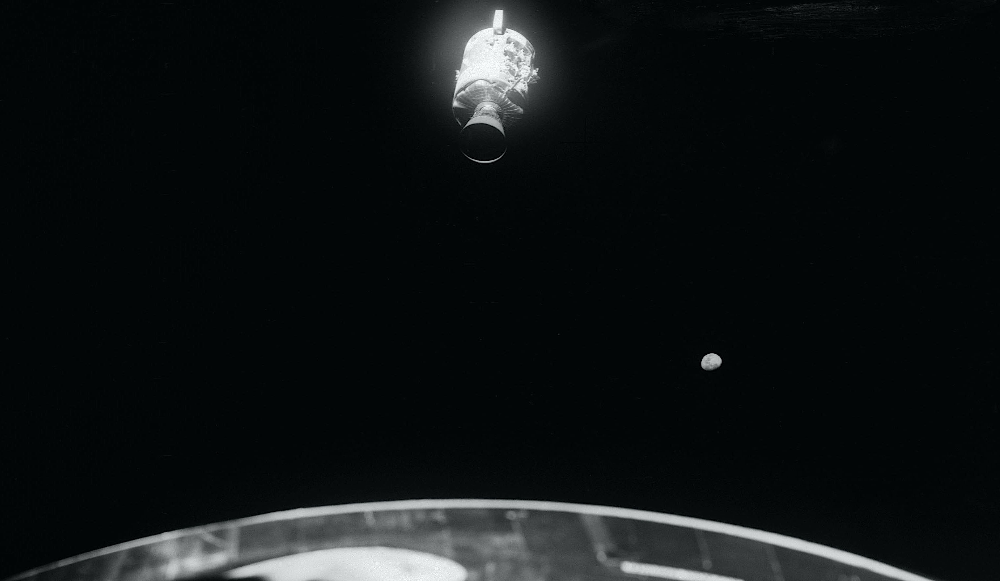

Service Module Jettison Timing
⚠️ The Situation
- Re-entry is hours away — the dead Service Module must be cut loose first
- The SM shelters the CM's heat shield from the deep cold of space — nobody knows what a long cold soak might do to it
- No one has seen the blast damage yet — photos would be gold for the accident investigation
- The crew gets exactly one chance at separation
- If it goes wrong, a 25-ton module drifts loose right beside the crew
⏰ LATE JETTISON
Keep the SM until about 1 hour before re-entry
✓ Advantages
- Shelters the CM's heat shield from deep-space cold as long as possible
- Less time for anything to go wrong after separation
✕ Disadvantages
- Little or no time to photograph the damage
- If separation fails or the modules bump, almost no time to recover
- One chance, zero margin, right before the most dangerous phase of the flight
📸 EARLY JETTISON
Release the SM about 4½ hours before re-entry
✓ Advantages
- Time to photograph the damage for NASA's investigation
- Time to troubleshoot if the separation goes wrong
- Clean separation long before the critical entry phase
✕ Disadvantages
- Heat shield sits exposed to deep-space cold for longer — an unknown risk
- Seeing the wreckage could rattle the crew hours before the hardest part of the flight
- Once it's gone, it's gone
🤔 WHAT SHOULD MISSION CONTROL DECIDE?
👆 Choose one of the options above 👆
NASA's Decision
✓ EARLY JETTISON
At GET 138:01:48 — about 4 hours and 39 minutes before entry interface — the crew cut the Service Module loose. Early enough for photos and margin; late enough to shelter the heat shield through most of the cold trip home.
The Push-Pull Maneuver:
The dead SM couldn't push itself away, so the crew improvised:
- Lovell fired the Lunar Module's thrusters, gently pushing the whole stack forward
- Jack Swigert fired the pyros — BANG! — explosive charges cut the SM free
- Lovell reversed thrust, backing away as the SM drifted ahead
Separation speed: about 1 foot per second — a slow, careful drift.
"SM Sep."
— Jim Lovell, GET 138:02:06
Seeing the Damage for the First Time:
As the SM tumbled away, the crew finally saw what the explosion had done — worse than anyone imagined.

The Damage:
- 💥 Entire Bay 4 panel blown away — 13 feet long, one-sixth of the SM's outer skin
- 🔥 Oxygen tank #2: gone — destroyed in the blast
- 🔥 Oxygen tank #1: plumbing and valve smashed by the shock — that's why it slowly bled empty
- ⚡ Fuel cells: not destroyed — suffocated. The shock slammed their oxygen valves shut; cells 1 and 3 died in minutes, cell 2 hung on two more hours until tank 1 ran dry
- 🔥 Possible damage all the way back at the big SPS engine bell
"And there's one whole side of that spacecraft missing." — Jim Lovell, GET 138:04:46
"It's really a mess." — Fred Haise, GET 138:05:31
Why the Photos Mattered:
"We'd like you to get some pictures, but we want you to conserve RCS."
— CapCom Joe Kerwin, GET 138:05:51
- ✓ The only direct look anyone ever got — the SM burned up over the Pacific
- ✓ Confirmed the blast centered on oxygen tank #2's bay, matching telemetry
- ✓ Apparent damage near the SPS engine bell backed the decision never to fire the big engine
Result: Clean Separation!
No collision. Clear photographs obtained.
Time to entry interface: about 4 hours, 39 minutes.
"I saw that Service Module, with that whole side blown out, tumbling away into space. And I thought: we rode that thing for four days. How are we still alive?" — Fred Haise
🎬 Dramatization — not a documented quote.
Why it was the right call: Jettisoning early bought time to photograph the damage and margin to recover from any separation problem, while still sheltering the heat shield through most of the cold coast home. A real trade-off — and NASA split it well.
📚 Sources for Skeptics
Would you have held the SM longer to protect the heat shield? Good — arguing with the plan is how engineers stay sharp. Check the record yourself:
- Apollo 13 Flight Journal — every radio call, annotated; Day 6 covers this jettison
- Apollo 13 Mission Report (PDF) — NASA's engineering report, including the damage-photo analysis
- Apollo 13 in Real Time — hear the actual "SM Sep" moment in real Mission Control audio